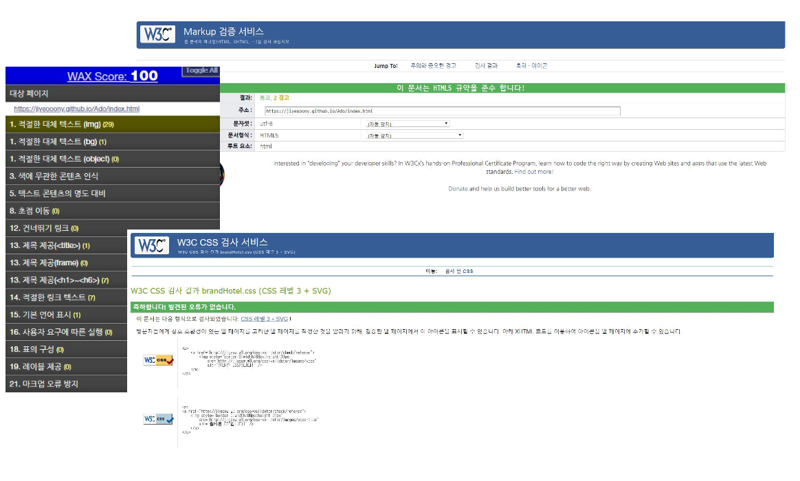
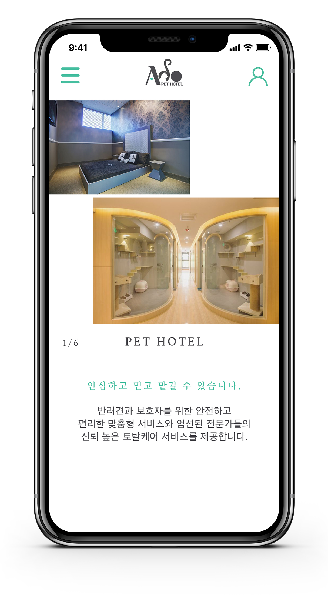
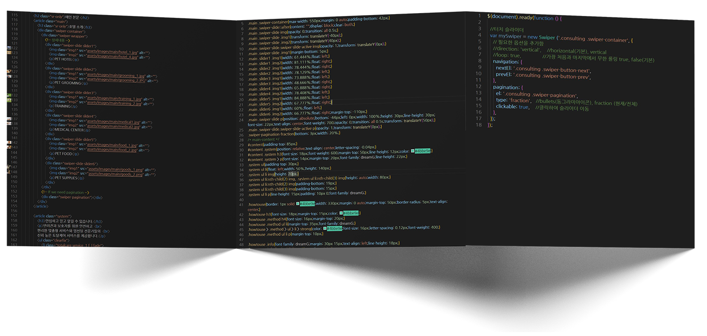
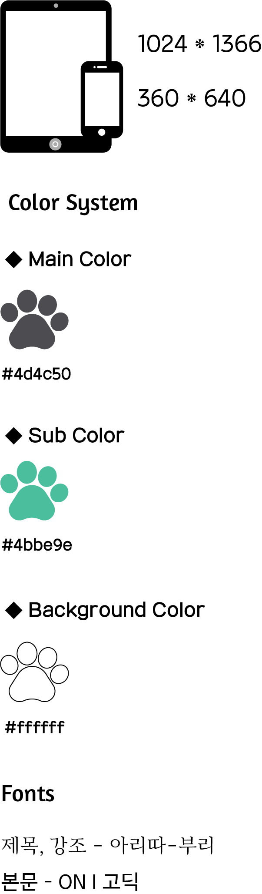
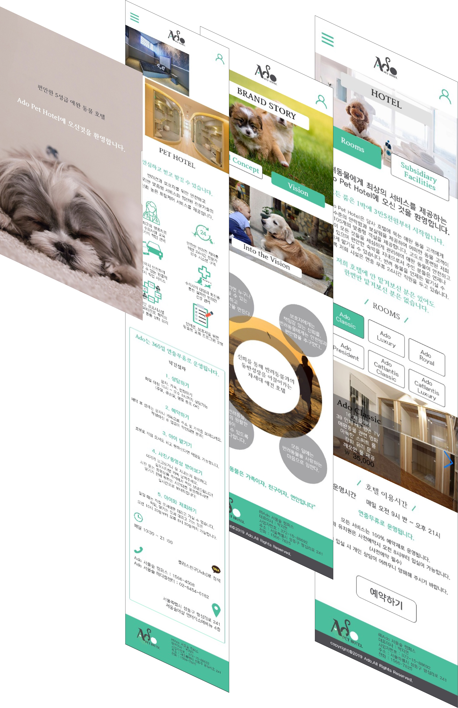
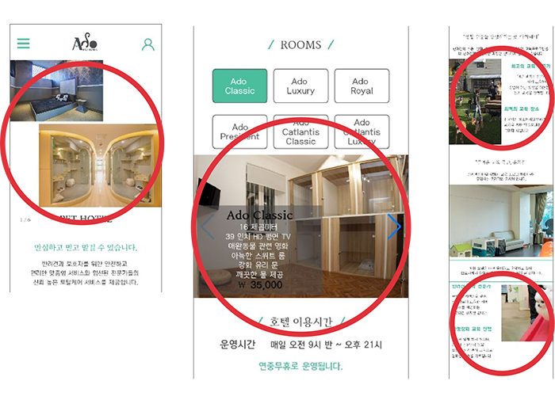
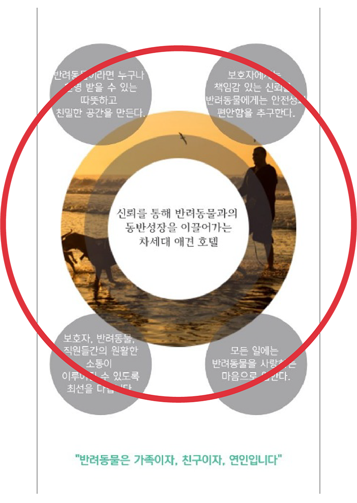

DETAIL VIEW

 HTML5, CSS3, JQEURY를 사용하여 사용자 시선의 접근성과 웹표준을 준수하며 제작하였습니다
HTML5, CSS3, JQEURY를 사용하여 사용자 시선의 접근성과 웹표준을 준수하며 제작하였습니다
"모든 이용자들의 사용성을 극대화하기 위해 웹 접근성 연구소의 콘텐츠 제작기법을 준수하였으며
다양한 브라우저에서 동일한 결과를 볼 수 있는 최적화 된 모바일 웹사이트로 구현하였습니다."



-
PAGE VIEW
"화이트와 저채도의 초록색을 활용해"
"심플하면서 편안함을 표현" -
여러 차례 걸친 기획 검토와 설계로 Ado PET HOTEL의 심플하면서 편안한 디자인을 표현하고
사용자의 접근성이 용이하도록 제작하였습니다.
현재 반려동물들을 위한 호텔이 있지만 웹 사이트가 아닌, 블로그, SNS으로 운영하거나 앱으로만
나와있어 PC웹 뿐만아니라, 모바일 웹으로도 나와있는 곳이 없습니다.
웹 사이트를 잘 이용하는 4~50대 고객들을 끌어들이고자 앱이 아닌 웹으로 만들었습니다.
심플한 레이아웃과 편안한 호텔이라는 것을 알리기 위해 화이트와 저채도의 초록색을 활용했습니다.
개인작업으로 진행 된 프로젝트로 직접 디자인하고 구현시킨 페이지는 인트로 페이지, 메인 페이지,
브랜드 컨셉 페이지, 비전 페이지, 객실 페이지, 부대시설 페이지입니다.


POINT VIEW
사용자의 접근성을 고려한 자세한 설명 KEY point!!
"모바일 웹 페이지인것을 고려하여 모든 것을 터치식으로 하므로서 터치만 하면 손 쉽게 넘어갈 수 있도록 구성."
사용자에게 정보전달을 함과 동시에 터치 수평 슬라이더로 접근을 쉽게 했고 약간의 애니메이션 기능을 사용하여 재미를 줌.
◆ Touch Page
모바일 웹용인만큼 쉬운 터치스크린을 사용했습니다.
◆ Awareness of Space
공간이 작은 휴대폰 사용시엔 크기가 줄어들고,
공간이 큰 아이패드 사용시엔 크기가 늘어납니다.